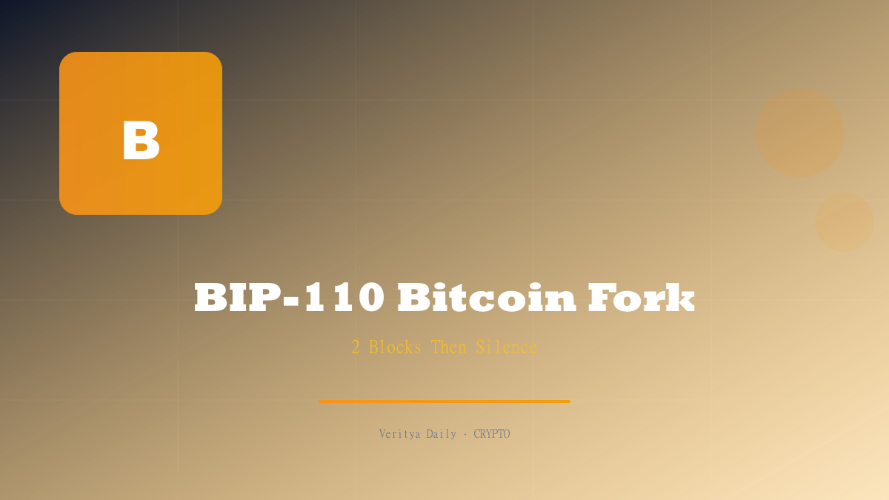

BIP-110: The Bitcoin Fork Debate

🔑 Key Takeaways
- BIP-110 soft fork attempt mined only 2 blocks before completely stalling
- The fork chain is now 300 blocks behind Bitcoin's main chain
- Luke Dashjr was removed as BIP editor amid the controversy
- The fork inherited Bitcoin's difficulty with tiny hashpower, making it unsustainable
- Highlights ongoing governance struggles in Bitcoin development
Table of Contents
What Is BIP-110 and Why It Matters
BIP-110 — the Bitcoin Improvement Proposal that nobody asked for but everyone is talking about — attempted to introduce changes to Bitcoin's protocol through a soft fork. What makes this particularly unusual is that soft forks typically require broad miner consensus to activate, and BIP-110 had nothing close to that.
The proposal itself was controversial from the start. It attempted to introduce changes that some developers argued were unnecessary and potentially harmful to Bitcoin's decentralization. The Bitcoin community — known for its contentious debates over even minor changes — was deeply divided on BIP-110.
In the broader context of Bitcoin's history, fork attempts are nothing new. We've seen Bitcoin Cash, Bitcoin SV, Bitcoin Gold, and numerous others. But what makes BIP-110 unique is that it was a soft fork attempt — meaning it was supposed to be backward-compatible — and it still failed spectacularly.
The significance here isn't just about the technical failure. BIP-110 exposed deep fractures in Bitcoin's governance model, raising questions about who gets to propose changes, who approves them, and what happens when the community can't agree.
"BIP-110 is less a technical event and more a governance earthquake. The fork failed, but the questions it raised about who controls Bitcoin's evolution aren't going away." — Bitcoin developer
Two Blocks and Done: The Fork That Fizzled
Here's where it gets almost comically tragic for BIP-110 supporters. The fork activated, miners began processing blocks on the new chain, and then... it stopped after just 2 blocks. Two blocks. That's approximately 20 minutes of mining activity before the chain effectively died.
To put this in perspective, Bitcoin's main chain produces 144 blocks per day (one every ~10 minutes). The BIP-110 chain managed to produce 2 blocks total before grinding to a halt. It's now 300 blocks behind the main chain, a gap that is mathematically insurmountable given the fork's negligible hashpower.
The timeline of events:
- Block 1: Mined successfully, initial excitement in pro-BIP-110 channels
- Block 2: Mined with significant delay, signaling hashpower was already leaving
- Block 3: Never came. The chain stalled permanently.
- Aftermath: Chain fell 300+ blocks behind, effectively dead
This is one of the shortest-lived fork attempts in Bitcoin's history. The rapid failure demonstrates a fundamental truth about Bitcoin: without hashpower, a fork is just a suggestion. No amount of social media campaigning or developer advocacy can substitute for actual mining support.
| Metric | BIP-110 Chain | Bitcoin Main Chain |
|---|---|---|
| Blocks Mined | 2 | ~860,000+ |
| Blocks Behind | 300+ | — |
| Hash Power | Negligible | ~600 EH/s |
| Status | Dead | Active |
The Difficulty Inheritance Problem
The technical reason for BIP-110's spectacular failure comes down to one fundamental issue: difficulty inheritance. When the fork launched, it inherited Bitcoin's current difficulty level — the computational difficulty required to mine each block. But the fork had only a tiny fraction of Bitcoin's hashpower.
Here's why this is a death sentence:
- Bitcoin's difficulty: Calibrated for ~600 exahashes per second (EH/s) of hashpower
- BIP-110 hashpower: A negligible fraction, perhaps a few EH/s at best
- Result: At Bitcoin's difficulty level, the BIP-110 chain would take hours or days to mine a single block
Bitcoin's difficulty adjustment mechanism is designed to recalibrate every 2,016 blocks (approximately two weeks). But BIP-110 never came close to mining 2,016 blocks — it managed just 2. The chain was stuck with an impossibly high difficulty and no way to adjust it.
This is the same problem that killed most Bitcoin fork attempts. Without sufficient hashpower to mine through the first difficulty period, the chain can't adjust to a sustainable level. It's a chicken-and-egg problem: you need hashpower to lower difficulty, but you need lower difficulty to attract hashpower.
Some forks solve this by implementing a difficulty adjustment algorithm (DAA) that recalibrates more frequently. BIP-110 apparently didn't, or at least didn't implement one that could compensate for the extreme hashpower deficit. It was a fundamental design oversight that doomed the fork from block one.
Luke Dashjr Removed as BIP Editor
In a dramatic twist that overshadowed the fork's technical failure, Luke Dashjr was removed as BIP editor. Dashjr, a long-time Bitcoin developer and one of the most recognizable figures in Bitcoin's technical community, had served as a BIP editor for years.
The removal was unprecedented. BIP editors are supposed to be neutral gatekeepers who manage the proposal process — they don't approve or reject proposals based on merit, but ensure they meet formatting and procedural requirements. Dashjr's removal signals that the BIP process itself has become politicized.
The circumstances surrounding the removal are complex:
- Pro-BIP-110 faction: Argued Dashjr was blocking legitimate proposals and wielding editorial power to suppress changes he personally disagreed with
- Anti-BIP-110 faction: Argued Dashjr was protecting Bitcoin from harmful changes and that his removal was a power grab by proponents of risky protocol modifications
- Neutral observers: Expressed concern that removing a BIP editor over a content dispute undermines the integrity of Bitcoin's governance process
The Dashjr removal raises serious questions about Bitcoin's governance. If BIP editors can be removed for opposing certain proposals, the role becomes purely ceremonial. If they can't be removed regardless of behavior, there's no accountability mechanism. Neither outcome is ideal.
Bitcoin's Governance Crisis Exposed
BIP-110's failure and the Dashjr removal together expose what many have long suspected: Bitcoin has a governance problem. The world's most important cryptocurrency has no formal governance mechanism. There's no voting system, no board of directors, no constitution. Changes happen through rough consensus — a deliberately vague concept that leaves enormous room for conflict.
The governance challenges Bitcoin faces include:
- Who proposes changes? Technically anyone can submit a BIP, but getting it taken seriously requires social capital within the developer community.
- Who approves changes? There's no formal approval body. "Rough consensus" among developers and miners is the standard, but defining what constitutes consensus is itself contentious.
- Who enforces decisions? Miners ultimately decide by choosing which chain to mine, as BIP-110 dramatically demonstrated. But miner concentration is a problem in itself.
- Who resolves disputes? When the community disagrees, there's no Supreme Court of Bitcoin. The only resolution mechanism is a fork — and as BIP-110 showed, forks without hashpower go nowhere.
This isn't just an academic problem. Bitcoin's governance model determines whether the protocol can evolve to meet future challenges or becomes frozen in amber. If every proposed change triggers this level of conflict, Bitcoin risks becoming technologically stagnant while competitors innovate.
What This Means for Bitcoin's Future
The BIP-110 saga is ultimately a net positive for Bitcoin, even though it was messy. Here's why:
First, it proved that Bitcoin's consensus mechanism works. A controversial change was proposed, it lacked sufficient support, and it failed. The system is working as designed — no single faction can force unwanted changes on the network.
Second, it highlighted the importance of hashpower as the ultimate arbiter. In Bitcoin, talk is cheap. If you want to change the protocol, you need miners to back you. BIP-110's inability to attract hashpower was the market's way of saying "no."
Third, the Dashjr removal — while controversial — shows that Bitcoin's governance is self-correcting. When someone accumulates too much power or makes decisions the community disagrees with, the community can act. It's messy, but it's democratic.
Looking forward, the lessons from BIP-110 are clear:
- Propose changes that have broad support — don't try to ram through contentious upgrades
- Secure hashpower before activating — a fork without miners is dead on arrival
- Respect the BIP process — undermining governance institutions does long-term damage
- Accept that Bitcoin moves slowly — this is a feature, not a bug
BIP-110 will go down as a footnote in Bitcoin's history — a cautionary tale about what happens when ambition exceeds support. But the questions it raised about governance will persist long after the fork's 2 blocks are forgotten.